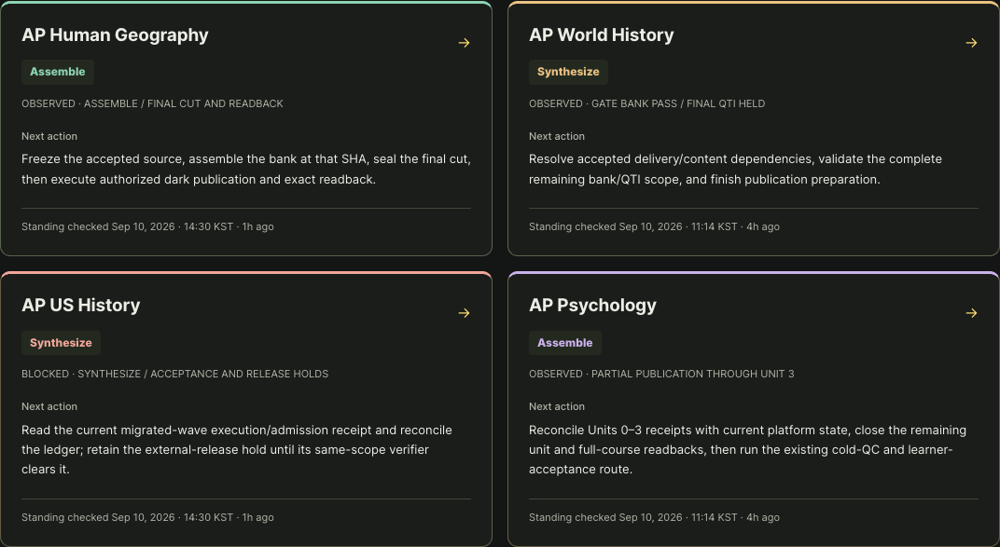

Align
Identify the course, inspect its sources and measure every required population.
Alpha’s course factory, on your Mac
Bring Alpha’s native tools, a reusable runbook and your preferred agent together. Start with the whole course, then work through what remains.
Claude Code · Codex · Hermes · tool-capable local agents
01 / Get started
Run this on your Mac. Sign in with your authorized Alpha GitHub account, choose your course and select an agent.
curl -fsSL https://joshuadurey-del.github.io/ap-four-course-dashboard/install.sh | bash02 / Know what remains
Use the shared workspace to find a course’s current stage and next action. Open a course for coverage, decisions and source evidence.

Shared workspace preview · course observations retain their own verification dates.
03 / Follow the native path
Identify the course, inspect its sources and measure every required population.
Generate, repair and accept the content through its native tools.
Integrate accepted content and prepare the learner experience.
Verify the published course and complete its acceptance requirements.
04 / Inspect the value
Builder release evidence · September 10, 2026 · Measurement scope
Install the local builder or open the shared course workspace.